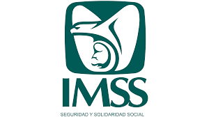

QUIEN SOY
Estudiante de ingeniería en Software en el 8vo semestre donde desarrollo mis conocimientos con formación en valores.
- Actitud positiva.
- Responsable.
- Organizada.
- Trabajo en equipo.
- Conocimientos avanzados en computación.
ESTUDIOS
Resumen de mis formaciones academicas
Resumen de mis formaciones academicas
- 2016 - 2019 | Preparatoria Económico - Administrativo Colegio de bachilleres del estado de Sonora
- 2019-Actualidad | Universidad Ingeniería en Software Instituto Tecnológico de Sonora
EXPERIENCIA PROFESIONAL
Telefonos de mexico (TELMEX)
- 2018 - 2019 | Practicas preprofesionales Teléfonos de México; Encargado del seguimiento de atención a clientes.
OneLink BPO

- Junio 2021 - Agosto 2021 | Asesor telefónico de atención a clientes Captura de datos, área de soporte técnico para la resolución de problemas con dispositivos telefónicos e internet en casa.
Instituto mexicano del seguro Social (IMSS)
- Septiembre 2023 - actualidad | Auxiliar de Farmacia Despacho de medicamentos, recepción y acomodo de medicamentos.